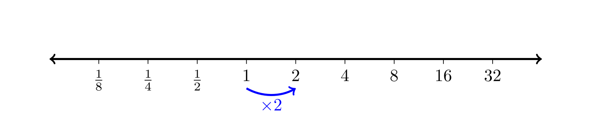
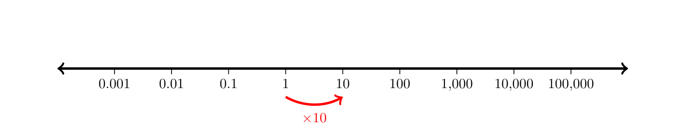

After we solved these equations, we also talked about the geometric
interpretation of the solutions as places on a graph where a function
has a certain y-value.
Graph the line
and check where it crosses the line
.
Graph the function
.
Wed, Jan 15
To make it easier to graph functions, it helps to know some basic
graphs. Here are six you should memorize.
We used these examples to help graph the following in class:
After those graphs, we talked about function notation. Both
and
to mean the same thing. But the notation
emphasizes that
is a function of the
variable. Be careful not to confuse function notation
with multiplication
.
Even though the notation looks the same, they are not the same!
We did these examples.
If
and
,
find
and
.
Find
.
The quantity of gasoline
sold by a gas station is a function of the price
that the owner sets. Here is a graph of the function
.
Use the graph above to find
.
Solve
for
.
If
,
explain in English what that means.
The function
can be used to approximate
.
Calculate
and
.
Fri, Jan 17
We started talking about different ways you can combine functions. We
did the following exercises.
(Exercise
1.2# 29) The function
gives the number of items that will be demanded when the price is
.
The production cost,
is the cost of producing
items. To determine the cost of production when the price is $6, you
would do which of the following?
Evaluate
Evaluate
Solve
Solve
Continuing the previous problem, profit is revenue minus cost,
and revenue is price times quantity sold. Using the functions
and
,
write down formulas for revenue and for profit.
After we talked about function composition, we switched to a quick
review of linear functions. You need to know these formulas for linear
functions:
Slope-Intercept Form
Point-Slope Form
You also need to understand slope very well:
Slope
A line passes through
and
.
Find an equation for the line. (video)
Today we talked about linear equation word problems.
Someone is hiking up a mountain. They start at an elevation of
1200 meters and climb at a constant rate. After 4 hours, they are at an
elevation of 1700 meters. Find a formula for their elevation
as a function of the time
in hours since they started hiking. (video)
Find a formula to convert Celsius to Fahrenheit.
Find a formula to convert Fahrenheit to Celsius.
Find the slope and
intercept of the equation
.
(video)
Joe imports coffee. He can import arabica beans for $6 per pound
and he can import robusta beans for $5 per pound. Suppose he spends
$1500 to import
pounds of arabica beans and
pounds of robusta beans.
Find an equation that relates
and
.
What is the
-intercept
for this equation, and what does it mean?
What is the
-intercept
for this equation, and what does it mean?
What is the slope of this equation, and what does it mean?
The Virginia state income tax for people making over $17,000 is $720
plus 5.75% of all income over $17,000. Find a formula for the tax owed
as a function of income
.
Suppose that the quantity of beef supplied
()
and demanded
()
are given by the following functions of price. Find the equilibrium
price and quantity. (video)
Leo has 4 more keys than Haley on his keychain. Together they
have 18 keys total. How many keys does Haley have? (video)
This last problem opens a can of worms, since it turns into a 2nd
degree polynomial. A polynomial is any sum of terms
that combine a whole number power of
multiplied by a number called a coefficient.
Solving equations involving polynomials requires a non-intuitive
technique:
Solving Polynomial Equations
Move every term to one side so that the other side is zero.
Factor the polynomial expression.
The solutions are the roots, i.e., the places where
each factor is zero.
After some algebra, this turns into the equation
.
We can factor that by dividing out the common factor of
.
There is a second more complex kind of factoring that involves
un-FOIL-ing a polynomial. Recall that FOIL stands for
First-Outside-Inside-Last, which is a mnemonic to remember how to
multiply out expressions like:
When you factor a polynomial with leading term
,
you need to find factors of the constant term that add up to the middle
coefficient. Here are some examples we did in class.
A rational function is a function that can be expressed using
polynomials and reciprocals of polynomials. You can use the same
techniques we’ve already used to solve equations involving rational
expressions.
.
After that, we talked about how to solve inequalities. We started
with simple examples like:
Find crossings and discontinuities. Solve for
equality to find the crossing points, and also mark the bad points where
the functions have vertical asymptotes.
Check subintervals. The x-values above divide
the number line into subintervals. For each subinterval, test a point to
see if the original inequality is true. It helps to either have a
factored expression to compare with zero or a graph to check.
Fri, Feb 7
Today we talked about exponential growth. We started with exponential
functions.
where
is the initial value and
is a constant called the base. The most common bases
are base-10, base-2, and the natural exponential base which is
which is also known as Euler’s number.
Graph the function
.
Exponential growth/decay is what you get when you multiply by the
same growth factor every step. This is different than
linear growth where you add the same constant rate of change every
step.
For each sequence below, determine if it a linear or exponential
pattern. If it is linear, what is the rate of change? If it is
exponential, what is the growth factor?
According to Newton’s law of cooling, the temperature difference
between a small object and its surroundings changes exponentially.
Suppose a cup of coffee is initially
C
above room temperature. If its temperature has decreased to only
C
above room temperature ten minutes later, then what will the temperature
be after 20 minutes? What about after 30 minutes? What is the growth
factor?
Suppose that the median house price in a city has been growing
exponentially for some time. If the median price was
in the year 2000 and
in 2010, then what were prices in 2020? What are prices now? Find an
equation for the price as a function of time.
One of the most common ways to talk about growth is with percentages.
This type of growth is called relative growth because
it is stated relative to the size of the population that is growing with
a percentage. For example, 5% growth of the United States population
would be a lot, because the US population is large. The best way to
understand relative growth is to convert percentage increases and
decreases into growth factors.
A growth factor is also the ratio of the new amount divided by the
old amount.
The US population was 310 million in 2010. It was 330 million in
2020. What is the growth factor and the percent change in the US
population from 2010 to 2020?
What would the growth factor and percent change be if the
population were to decline from 330 million in 2020 to 320 million in
2030?
The tricky thing about percent growth is that it is not additive. If
something grows by 30% for two years in a row, that is not 60% total
growth. You have to multiply the growth factors.
If something grows by 30% one year and then 30% again the next
year, how much did it grow total as a percentage?
If I have $100 invested and its value grows by 25% in the first
year and shrinks 25% in the second year, then how much money is left
after two years? (video)
Since you multiply growth factors instead of adding percent changes,
you also have to take roots to break growth factors into equal
amounts.
What was the (average) annual percent population change in the
United States between 2010 and 2020?
If that rate of population growth continues, what is the equation
for the population of the United States as a function of time?
If a savings account earns 2% interest every year, and you put
$100 in the bank and leave it there for 10 years, how much money will
you have? What about after
years?
Which is better, to invest in a mutual fund that grows by 10%
every year, or a fund that grows by 0.8% every month?
Here is one more example that we didn’t have time for in class:
Last time we talked about a cup of coffee that cools exponentially.
If it cools from
C
above room temperature to
C
in 10 minutes, then what is the percent change in temperature every
minute?
Today we introduced logarithms. We started by
talking about logarithmic scales, which are number
lines where the numbers are spaced by multiplication instead of
addition.

A base-2 logarithmic scale

A base-10 logarithmic scale
Logarithmic scales help understand the logarithm function.
What are Logarithms?
The logarithm function
can be understood two ways:
equals the number of steps
is away from 1 on a (base-b) log-scale.
Logarithms are useful because they convert difficult
multiplication/division problems into easier addition/subtraction
problems. They also convert exponential patterns into linear
patterns.
Properties of Logarithms
Logarithms convert multiplication to addition
.
Logarithms convert division to subtraction
.
Logarithms let you pull down powers
.
The most important base for exponential and logarithmic functions in
calculus is the number
.
This is the natural base for the logarithm and
exponential function for reasons that we’ll see later when we talk about
derivatives. We write
to denote the base-e logarithm.
What are
and
?
One of the most important applications of logarithms is that they let
you solve equations with variables in the exponent.
Here is one more good exercise using logarithms that we didn’t have
time for:
A lumber company has 1,200,000 trees. They plan to harvest 7% of the
remaining trees each year. How long until they have harvested half of
the trees? (video)
Wed, Feb 19
Class is canceled today because of the snow, but I recommend starting
homework 6 if you haven’t already. Here are
some video links for problems similar to the ones on the homework.
Which of the following equations would you need a logarithm to
solve? (<https://www.youtube.com/shorts/2MT89tcjnQo))
How long would it take an investment of $4,000 to grow to $20,000
if it grows by 7% each year? (video)
A lumber company has 1,200,000 trees. They plan to harvest 7% of
the remaining trees each year. How long until they have harvested half
of the trees? (video)
Fri, Feb 21
We started by going over problems #5 and #7 from Homework 6. We also talked about the shape of the
graph of a logarithm function. You should memorize the graph of the
natural exponential and logarithm functions.
After that quick review, we introduced derivatives.
Derivatives
A function
is differentiable at a point if the graph
looks more and more like a straight line as you zoom in. That straight
line is called the tangent line and its slope is called
the derivative.
If
,
then all three of the following notations are used for the derivative:
Calculus was discovered independently by both Newton and Leibniz, and
they invented different notations for the derivative. Newton used a mark
like
or
to represent the derivative. Leibniz used the fraction
.
Newton’s notation emphasizes that the derivative is a function that
depends on which
we input. Leibniz’s notation emphasizes that the derivative is the slope
of a tangent line, so it is equal to a rise over a run. The symbols
and
are called differentials, and can represent any rise
and run of a tangent line, the same way that
and
represent rise and run for other lines. (video)
Average versus Instantaneous Rate of Change
The average rate of change of a function
on an interval
is
This is the slope of a secant line that passes through two points on the
graph of
.
The instantaneous rate of change of
at a point
is the derivative
This is the slope of a tangent line at one point on the graph of
.
If you drop a rock from a height of 400 feet in the air, its height
after
seconds will be
The derivative of height is the velocity:
What is the average velocity of the rock as it falls?
Zoom in on the graph at
seconds. Use the graph to estimate the instantenous velocity when the
rock hits the ground.
Guess which point on the graph has a tangent line with slope
equal to the average velocity over the interval
.
Graph the velocity function
.
Why are the average rate of change and instantaneous rates of change the
same for the velocity function? What is the derivative of the velocity,
and what does it represent?
Today we introduced some rules for calculating the derivative. For
any function
,
the notation
means “take the derivative of the function”. We write either
,
,
,
or sometimes
to represent the result.
Basic Differentiation Rules
Power Rule.
.
Constant Multiple Rule.
.
Addition Rule.
.
Use the power rule to find each of the following derivatives.
What is the slope of the tangent line to
at the point
?
Find the derivative of
.
Find the derivative of
.
In exercise 4 from the Parabolas
workshop, we looked at an example where a gas station’s revenue
is a function of the price they charge
per gallon. The formula for the revenue was
Find the formula for the derivative
.
Find the value of
when
and explain what it means.
Find the derivative of
.
Wed, Feb 26
Class was canceled today.
Fri, Feb 28
We applied the rules from last time to find the derivatives of the
following examples.
Let
.
Find the slope of the tangent line when
.
(video)
Today we talked about applications of derivatives. One application is
to find the points on a graph where the slope is zero:
Let
.
Find
and find the points where
.
Let
.
Find
and the point where
.
Another important application in economics is the notion of marginal
functions including marginal cost and marginal revenue. If a company
produces
goods and the cost to produce those goods is a function
,
then the marginal cost to produce the next one item after already
producing
is called the marginal cost. Technically it is equal to
,
but it is often easier to just use the derivative
to estimate the marginal cost instead. Likewise, the marginal
revenue is the extra bit of revenue that comes from selling the
next one item after selling the first
,
and it can be approximated by the derivative
of the revenue function.
Suppose the cost of producing
machines is
.
Find the marginal cost of producing one more machine beyond
.
Show that this is roughly the same as the actual cost of the 106th
machine. (video)
Wed, Mar 5
We started with some more marginal analysis examples.
Suppose a company has total revenue
and cost
.
Find the marginal revenue, marginal cost, and marginal profit. (video)
Suppose that
.
Find the marginal cost. When is the marginal cost zero?
Although derivatives work term-by-term, they don’t play nice with
factors. For example, you can’t just take the derivatives the two
factors in the expression
.
To work with factors, you need to use the product rules.
After those examples, we introduced the chain rule, which is the last
and also one of the most important rules for finding the derivative.
Chain Rule
To find the derivative of a composition of two functions (one
function inside another):
Think of this as a two step process:
Step 1. Take the derivative of the outside function
(leave the inside alone).
Step 2. Multiply by the derivative of the inside.
The chain rule takes practice to get used to, but here is an
intuitive example to start to get the hang of it.
If you drive along Interstate-70 across Kansas from milepost 0 in
the west to milepost 400 near where the highway crosses into Missouri,
then your elevation decreases from 1270 meters to only 270 meters. So
the average change in elevation is
meters per mile as you drive east. How fast is your elevation changing
if you are driving at 60 miles per hour?
In this example,
is miles driven,
is elevation, and
is time. If you are driving 60 miles per hour, then
.
And the elevation is
.
To find
,
you need to multiply
.
You can also use the chain rule to avoid using the quotient rule.
Here is an example we did last time, re-written as a product rule:
Find the derivative of
A rock is thrown into the center of a still pond, causing ripples
to spread out in a circle. The ripples move outwards at 4 feet per
second.
Find a formula for the area of the disturbed water as a function of
radius.
Find a formula for the area of the disturbed water as a function of
time.
Calculate
Calculate
Chain Rule (Leibniz Notation)
If
and
,
then this is another way to write the chain rule:
Suppose that the crime rate
in a city is a function of the population
.
The population
is a function of time
in years. Suppose that the city’s population is currently 300,000 at
.
If
people per year and
crimes per person, then estimate the rate of change in crime this
year.
Here are some examples that combine the chain rule with other
rules:
Why is the chain rule called the chain rule? It’s because
you can apply the chain rule to a sequence of nested functions, no
matter how long the chain of functions is. For example: if
,
,
and
,
then this chain of functions has derivative:
Here is an example of a problem where you need to use the chain rule
twice:
In physics, if
is the position of an object as a function of time, then the first
derivative is velocity and the second derivative is acceleration.
A rock thrown straight up has height
in feet after
seconds. Find
and
(that is, find the velocity and acceleration).
The normal distribution (bell curve) in statistics has equation
.
Find the first and second derivatives, and use the second derivative to
determine when the graph is concave up and concave down.
Find the intervals where the function
is concave up. (similar
example)
We started by reviewing the problem on the midterm exam where the
temperature of a can of soda in Celsius after
hours in a refrigerator is
We talked about how to find the derivative and about what the derivative
means. In particular we talked about units and
how to find the units of derivatives.
After that, we talked about finding the intervals where a function is
increasing and where it is decreasing. This works exactly like finding
the intervals of concavity, except you use the first derivative, not the
second. We also talked about local maximums and
local minimums. A local max occurs when a continuous
function is increasing before and decreasing after a point. A local
minimum occurs when the function is decreasing before and increasing
after a point.
Find the intervals of increase and decrease for
.
(video)
Find the intervals of increase and decrease for
.
(video)
Find the intervals of increase and decrease for
.
Wed, Apr 2
We continued doing optimization problems today. We did these
examples.
Find the local max and mins for
.
Find the intervals of increase and decrease for
.
(video)
We also talked about finding the absolute maximum and minimum
y-values on an interval. The key idea is that you need to check
the y-values at both the critical points inside the interval and also
the endpoints of the interval. We did these two examples:
Today we went over homework 10. We also
looked at this example:
Find absolute max and min of
on the interval
.
(video)
Then we looked at examples of optimization word problems.
A farmer wants to fence off a rectangular plot of land along the
side of a long straight river. He has a total of 2400 feet of fence. How
large of and area can he fence off? (video)
With the last example, we talked about the first and second
derivative tests.
First Derivative Test. Suppose
has a critical point
where
.
If
changes from positive to negative at
,
then
is a local max.
If
changes from negative to positive at
,
then
is a local min.
Second Derivative Test. If
has a critical point
where
,
then the sign of the second derivative can tell you if the critical
point is a local max or min.
A differential represents a change in a variable along a tangent
line, and so it can have a numerical value. The change in
along the tangent line is
and the change in
is
.
Find the differential
when
.
What is
when
and
?
Find the differential
when
.
What is the value of
when
and
?
(video)
The radius of the Earth is about 4000 miles. According to the snowball Earth
hypothesis, the Earth might once have been covered in a layer of ice
that was half a mile thick. Approximately how many cubic miles of ice is
that? Hint: Find the differential of
when
and
.
Estimate
using differentials. Hint: How much bigger is
than
?
Calculate the differential of
at
to find out. (video)
Wed, Apr 9
Today we looked at examples of functions of two or more variables and
how to graph them. There are two options for graphing function with two
variables. You can either graph the level curves on a
regular xy-plane or you can graph the surface
using a 3D grapher (like Desmos
3D).
We discussed the following examples:
Volume of a cylinder is
.
Body mass index (BMI) is
where
is a person’s weight in lbs and
is their height in inches. A BMI less than 18.5 is underweight, over 25
is overweight, and over 30 is obese. Find
.
Volume of a box is
.
We made a 3D graph of the function
using (Desmos
3D).
Make a graph showing three different level curves for
.
(Desmos)
Partial Derivatives
If
,
then the partial derivative of
with respect to
is denoted
and it represents the derivative of
with respect to
treating
as a constant. Likewise
is the derivative of
with respect to
treating
as a constant.